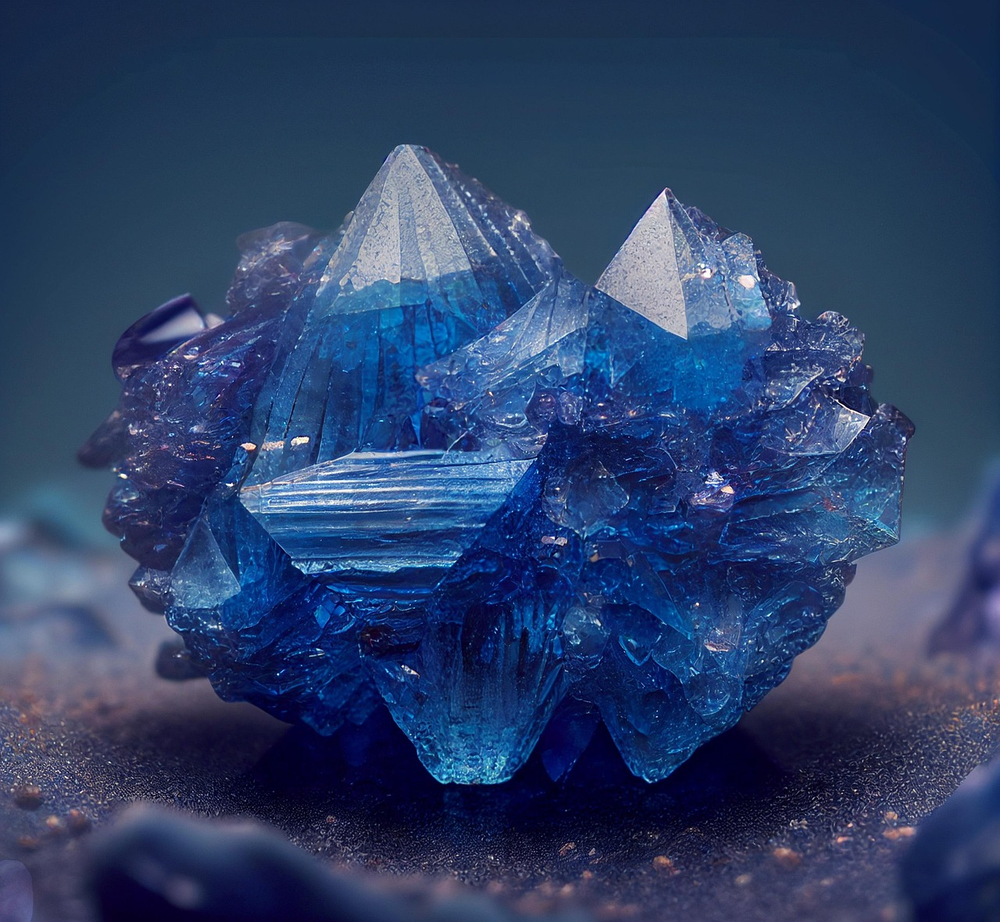

한-중앙아 5국 광물 협력 출범, 크롬·우라늄 대안 공급망 첫 발

한국 산업통상자원부와 카자흐스탄·우즈베키스탄·키르기스스탄·타지키스탄·투르크메니스탄 5개국 산업장관은 2026년 9월 서울에서 개최된 한-중앙아 산업협력 포럼에서 핵심광물 공동 개발·수출 협력 MOU를 체결했다. 공동선언문에는 크롬·우라늄·텅스텐·몰리브덴·희토류 5개 품목의 우선 협력 대상 지정이 명시됐다.
카자흐스탄은 전 세계 우라늄 생산의 43%(2024년 기준 21,227t)를 담당하는 최대 공급국이며, 크롬 광석 매장량은 세계 2위(약 2억 3000만t)다. 우즈베키스탄은 몰리브덴과 희토류 원석 생산에서 각각 전 세계 5위권에 위치한다. 한국의 중앙아시아 핵심광물 수입 비중은 현재 전체의 3% 미만으로 잠재 확대 여지가 크다.
중앙아시아 광물의 최대 물류 장벽은 내륙국 특성이다. 카자흐스탄에서 한국까지의 육로·해상 복합 운송은 중국 시베리아 횡단철도를 경유할 경우 23~28일, 카스피해~흑해~수에즈 루트는 45~55일이 소요된다. 중국 우회 루트의 물류비는 기존 대비 30~40% 높아 경제성 확보가 관건이다.
한국 정부는 2026~2030년 중앙아시아 광물 개발 협력에 ODA·수출입은행 자원개발금융을 합쳐 5000억 원을 투입하는 방안을 검토 중이다. POSCO인터내셔널은 카자흐스탄 크롬 광산 지분 투자 협의를 진행 중이며, 한국광물자원공사(KOMIR)는 우즈베키스탄 희토류 탐사 계약 체결을 2026년 4분기 목표로 추진하고 있다.
이번 협력 출범의 실질적 의미는 '중국 없는 광물 루트'의 첫 설계도가 공식화됐다는 점이다. 중국은 갈륨·게르마늄·흑연·희토류에 이어 헬륨까지 수출통제를 확대하며 소재 무기화를 고도화하고 있는데, 한국의 대중 핵심광물 의존도는 품목별로 45~92% 수준이다. 중앙아시아는 지리적으로 러시아·중국에 둘러싸여 있어 독립적 공급망 구축이 쉽지 않지만, 대안이 없는 상황에서 '첫 발'이라는 의미 자체가 크다.
공급망 다변화 선언이 실질 조달로 이어지려면 물류 인프라 투자가 선행돼야 한다. 중앙아시아 광물의 한국 도달 비용이 중국산 대비 30~40% 높다는 점은 단기적으로 소재 원가 상승 요인이다. 이 비용 차이를 줄이는 인프라 투자(카스피해 항만, 조지아 경유 철도) 없이는 협력 MOU가 서류에 머물 가능성이 높다. 정부 ODA 5000억 원이 인프라에 집중되느냐, 탐사 지원에 분산되느냐가 실질 성과를 가를 변수다.
POSCO인터내셔널은 카자흐스탄 크롬·몰리브덴 광산 지분 투자를 통해 철강 원료 조달 다변화와 함께 제3국 수출 중개 수익을 동시에 노릴 수 있다. POSCO 그룹의 중앙아시아 광물 사업 포트폴리오는 2025년 기준 연간 매출 1200억 원 수준이나, 이번 협력 MOU로 2030년까지 3000억 원 이상 확대가 가능하다는 내부 전망이 나온다.
한국광물자원공사(KOMIR)와 연계된 광물 탐사 전문 서비스 기업들이 수혜를 받는다. 특히 탐사·시추 장비 공급사와 지질 조사 서비스 업체들은 ODA 예산 집행의 직접 수혜자가 된다. 한국지질자원연구원(KIGAM)은 이미 우즈베키스탄·카자흐스탄에 공동 연구소를 운영 중이며, 이번 MOU로 탐사 예산이 최소 두 배 이상 확대될 전망이다.
물류 비용 경쟁력이 없는 상태에서 중앙아시아 조달을 무리하게 추진하면 단기적으로 소재 원가가 상승해 한국 제조업의 가격 경쟁력이 저하될 수 있다. 특히 크롬을 원재료로 사용하는 스테인리스강·특수합금 업체들은 조달처 전환 시 원가가 t당 12~18만 원 증가할 것으로 추산된다. 중소 합금 전문사들에게는 치명적인 원가 부담이다.
러시아는 중앙아시아 광물의 중국 수출 중개 역할을 통해 수수료 수입을 얻어왔다. 한국이 카스피해·흑해 루트를 통한 독자 물류를 강화하면 러시아의 중개 수익이 감소한다. 이에 러시아가 외교적 압력을 행사해 중앙아 5개국의 대한 협력 속도를 늦출 가능성을 배제할 수 없으며, 이는 협력 MOU 이행 리스크 요인이다.
기업 구매 담당자는 현재 조달하는 크롬·몰리브덴·텅스텐의 원산지 비중을 즉시 점검해야 한다. 중국산 비중이 60% 이상이면 중앙아시아 대안 공급처 발굴을 2026년 내 착수해야 한다. POSCO인터내셔널·KOMIR의 중앙아 광물 공동 구매 프로그램을 통해 초기 물류 비용을 분담하는 방식이 현실적이다.
개인 투자자는 중앙아시아 광물 협력의 수혜를 단기 주가 상승으로 기대하기보다 3~5년 호흡의 중장기 시나리오로 봐야 한다. 탐사에서 생산까지 최소 5~7년이 걸리는 광물 개발 특성상 2026년 MOU 체결이 2031년 이전에 실질 물량으로 이어지기 어렵다. 단기 수혜는 탐사 장비·서비스 기업, 장기 수혜는 광산 지분을 보유한 종합 상사다.
실제 조달 현장에서는 — 중앙아시아 광물 샘플을 한국으로 가져오는 데 통관·운송만 6~8주가 걸리는 현실을 직접 경험했다. 서류 불일치 하나로 카자흐스탄 세관에서 두 달이 묶이는 일도 있었다. 정부 간 MOU가 아무리 훌륭해도 현장 세관·물류 절차를 선제적으로 표준화하지 않으면 첫 실물 거래가 성사되는 데 2~3년이 더 걸린다. 이번 협력에서 '인프라 투자'만큼이나 '통관 절차 간소화' 조항이 중요한 이유다.
이 포스팅은 쿠팡 파트너스 활동의 일환으로 수수료를 제공받습니다.